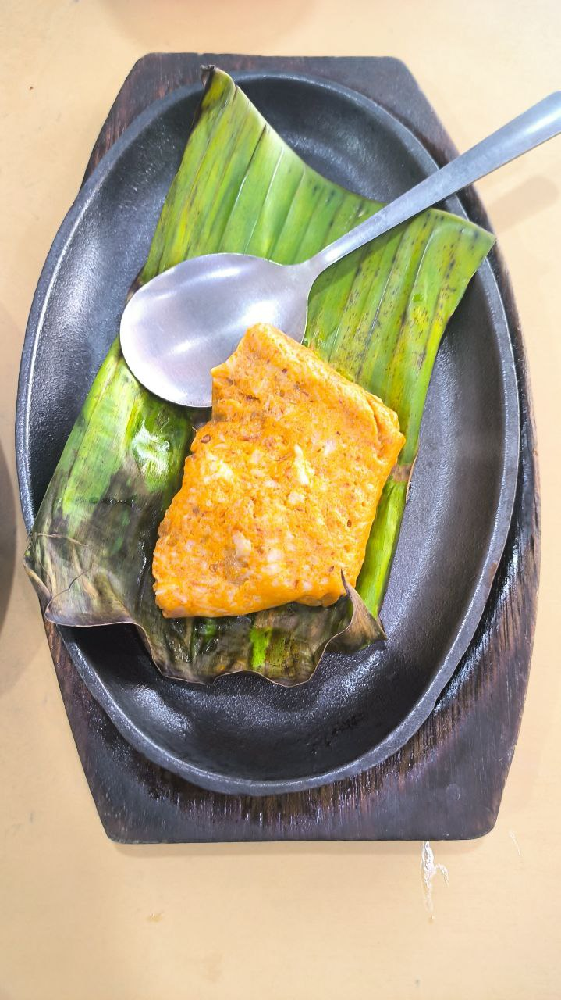

Muar Otak

Description
Muar is a place in Johor. Otak means brains. However, there are no brains involved in the making of this dish. Instead, it's a delicious soft fish cake that's squishy like a brain (or so I imagine).
Ingredients
- 450g fish meat (use Mackerel or Ikan Tenggiri)
- 250ml coconut milk
- 1 bunch banana leaves
Seasoning:
- 3 tbsp corn flour
- 3 tbsp curry powder
- 1 1/2 tsp turmeric powder
- 3 tbsp chili paste
- 2 tsp salt
- 1 1/2 tsp sugar
- 2 tsp minced garlic
- 2 tsp minced shallot
Steps
- Wilt your banana leaves over an open fire. Trim them to 6" x 10".
- Debone your fish by scraping the meat off the bones with a spoon
- Set aside 150g of fish meat. Place the remaining 300g into a food processor along with the coconut milk. Blend into a smooth paste.
- Add the fish paste mixture into a large bowl along with all the seasoning. Mix until smooth, then add in the remaining 150g of fish meat. Leave the 150g fish meat in chunks - do not blend it.
- If the fish paste is too dry, add around 100g of water.
- Taking 100g at a time, wrap otak paste in banana leaves.
- Steam the wrapped otak for 5 minutes under a high flame.
- Grill otak over charcoal fire until slightly charred. Serve hot.
Credits
This recipe is heavily summarised from Annielicious Food, which provides more detailed instructions on how to actually make the dish.